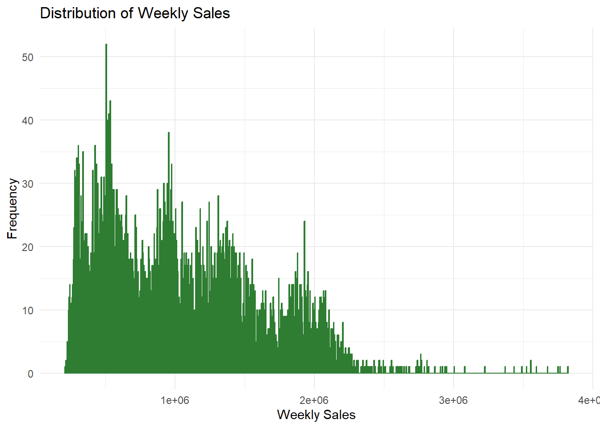
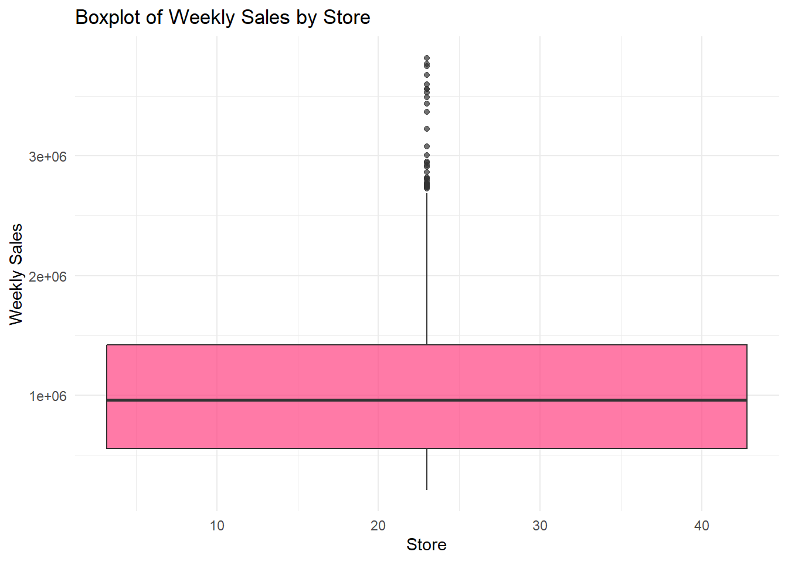
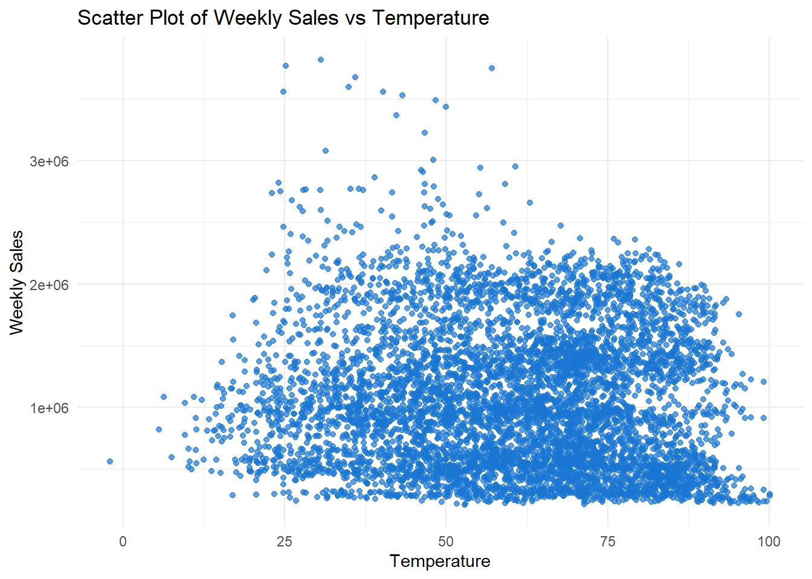
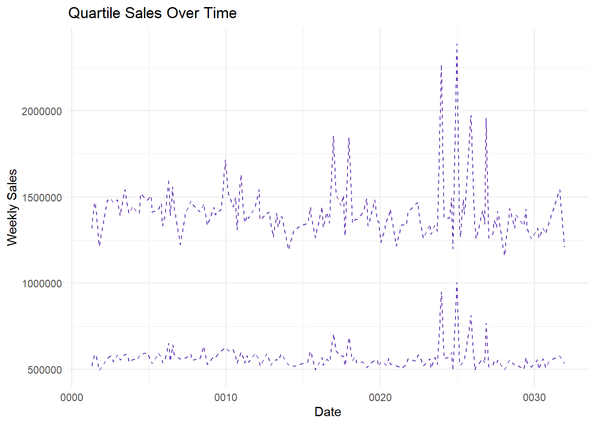

# Load necessary libraries
library(ggplot2)Warning: package 'ggplot2' was built under R version 4.3.2library(dplyr)Warning: package 'dplyr' was built under R version 4.3.2
Attaching package: 'dplyr'The following objects are masked from 'package:stats':
filter, lagThe following objects are masked from 'package:base':
intersect, setdiff, setequal, unionlibrary(plotly)Warning: package 'plotly' was built under R version 4.3.2
Attaching package: 'plotly'The following object is masked from 'package:ggplot2':
last_plotThe following object is masked from 'package:stats':
filterThe following object is masked from 'package:graphics':
layoutlibrary(gplots)Warning: package 'gplots' was built under R version 4.3.2
Attaching package: 'gplots'The following object is masked from 'package:stats':
lowesslibrary(caret)Warning: package 'caret' was built under R version 4.3.2Loading required package: latticelibrary(randomForest)Warning: package 'randomForest' was built under R version 4.3.2randomForest 4.7-1.1Type rfNews() to see new features/changes/bug fixes.
Attaching package: 'randomForest'The following object is masked from 'package:dplyr':
combineThe following object is masked from 'package:ggplot2':
marginlibrary(e1071)Warning: package 'e1071' was built under R version 4.3.2# Load the Walmart data
Walmart <- read.csv("C:/Users/HP/Downloads/Walmart.csv")
# Data Cleanup
# Convert Date column to Date format
Walmart$Date <- as.Date(Walmart$Date)
# Feature Engineering
# Extract Year, Month, and Day from Date
Walmart$Year <- format(Walmart$Date, "%Y")
Walmart$Month <- format(Walmart$Date, "%m")
Walmart$Day <- format(Walmart$Date, "%d")
# Exploratory Data Analysis (EDA)
# Display the first few rows of the dataset
head(Walmart) Store Date Weekly_Sales Holiday_Flag Temperature Fuel_Price CPI
1 1 0005-02-20 1643691 0 42.31 2.572 211.0964
2 1 0012-02-20 1641957 1 38.51 2.548 211.2422
3 1 0019-02-20 1611968 0 39.93 2.514 211.2891
4 1 0026-02-20 1409728 0 46.63 2.561 211.3196
5 1 0005-03-20 1554807 0 46.50 2.625 211.3501
6 1 0012-03-20 1439542 0 57.79 2.667 211.3806
Unemployment Year Month Day
1 8.106 0005 02 20
2 8.106 0012 02 20
3 8.106 0019 02 20
4 8.106 0026 02 20
5 8.106 0005 03 20
6 8.106 0012 03 20# Summary statistics
summary(Walmart) Store Date Weekly_Sales Holiday_Flag
Min. : 1 Min. :0001-04-20 Min. : 209986 Min. :0.00000
1st Qu.:12 1st Qu.:0008-07-20 1st Qu.: 553350 1st Qu.:0.00000
Median :23 Median :0016-04-20 Median : 960746 Median :0.00000
Mean :23 Mean :0016-03-07 Mean :1046965 Mean :0.06993
3rd Qu.:34 3rd Qu.:0023-12-20 3rd Qu.:1420159 3rd Qu.:0.00000
Max. :45 Max. :0031-12-20 Max. :3818686 Max. :1.00000
Temperature Fuel_Price CPI Unemployment
Min. : -2.06 Min. :2.472 Min. :126.1 Min. : 3.879
1st Qu.: 47.46 1st Qu.:2.933 1st Qu.:131.7 1st Qu.: 6.891
Median : 62.67 Median :3.445 Median :182.6 Median : 7.874
Mean : 60.66 Mean :3.359 Mean :171.6 Mean : 7.999
3rd Qu.: 74.94 3rd Qu.:3.735 3rd Qu.:212.7 3rd Qu.: 8.622
Max. :100.14 Max. :4.468 Max. :227.2 Max. :14.313
Year Month Day
Length:6435 Length:6435 Length:6435
Class :character Class :character Class :character
Mode :character Mode :character Mode :character
# Distribution plot for Weekly Sales
ggplot(Walmart, aes(x = Weekly_Sales)) +
geom_histogram(binwidth = 5000, fill = "#4CAF50", color = "#2E7D32", alpha = 0.7) +
labs(title = "Distribution of Weekly Sales",
x = "Weekly Sales", y = "Frequency") +
theme_minimal()
# Boxplot for Weekly Sales by Store
ggplot(Walmart, aes(x = Store, y = Weekly_Sales)) +
geom_boxplot(fill = "#FF4081", alpha = 0.7) +
labs(title = "Boxplot of Weekly Sales by Store",
x = "Store", y = "Weekly Sales") +
theme_minimal()Warning: Continuous x aesthetic
ℹ did you forget `aes(group = ...)`?
# Scatter plot for Weekly Sales and Temperature
ggplot(Walmart, aes(x = Temperature, y = Weekly_Sales)) +
geom_point(color = "#1976D2", alpha = 0.7) +
labs(title = "Scatter Plot of Weekly Sales vs Temperature",
x = "Temperature", y = "Weekly Sales") +
theme_minimal()
# Quartile plot
quartile_data <- Walmart %>%
group_by(Date) %>%
summarise(Q1 = quantile(Weekly_Sales, 0.25),
Q3 = quantile(Weekly_Sales, 0.75))
ggplot(quartile_data, aes(x = Date)) +
geom_line(aes(y = Q1), color = "#673AB7", linetype = "dashed") +
geom_line(aes(y = Q3), color = "#673AB7", linetype = "dashed") +
labs(title = "Quartile Sales Over Time",
x = "Date", y = "Weekly Sales",
color = "Quartile") +
theme_minimal()
# Model Evaluation
# Split the data into training and testing sets
set.seed(123)
train_indices <- createDataPartition(Walmart$Weekly_Sales, p = 0.7, list = FALSE)
trainData <- Walmart[train_indices, ]
testData <- Walmart[-train_indices, ]
# Evaluate the linear regression model
lm_model <- lm(Weekly_Sales ~ Temperature + Fuel_Price + CPI + Unemployment + Holiday_Flag, data = trainData)
lm_predictions <- predict(lm_model, newdata = testData)
lm_r2 <- cor(lm_predictions, testData$Weekly_Sales)^2
lm_rmse <- sqrt(mean((lm_predictions - testData$Weekly_Sales)^2))
# Evaluate the random forest model
rf_model <- randomForest(Weekly_Sales ~ Temperature + Fuel_Price + CPI + Unemployment + Holiday_Flag, data = trainData)
rf_predictions <- predict(rf_model, newdata = testData)
rf_r2 <- cor(rf_predictions, testData$Weekly_Sales)^2
rf_rmse <- sqrt(mean((rf_predictions - testData$Weekly_Sales)^2))
cat("Linear Regression Model:\n")Linear Regression Model:cat("R-squared:", lm_r2, "\n")R-squared: 0.0154542 cat("RMSE:", lm_rmse, "\n\n")RMSE: 553801.7 cat("Random Forest Model:\n")Random Forest Model:cat("R-squared:", rf_r2, "\n")R-squared: 0.140237 cat("RMSE:", rf_rmse, "\n")RMSE: 521092.6